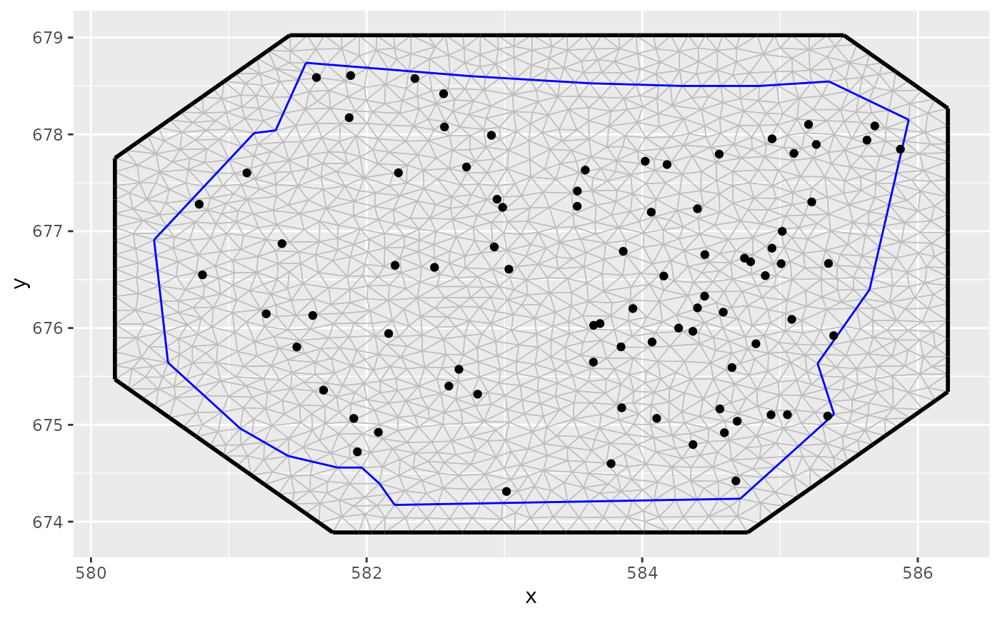

This function provides point samples from one- and two-dimensional inhomogeneous Poisson processes. The
log intensity has to be provided via its values at the nodes of an inla.mesh.1d or
inla.mesh object. In between mesh nodes the log intensity is assumed to be linear.
Usage
sample.lgcp(
mesh,
loglambda,
strategy = NULL,
R = NULL,
samplers = NULL,
ignore.CRS = FALSE
)Arguments
- mesh
An
INLA::inla.meshobject- loglambda
vector or matrix; A vector of log intensities at the mesh vertices (for higher order basis functions, e.g. for
inla.mesh.1dmeshes,loglambdashould be given asmesh$mbasis function weights rather than the values at themesh$nvertices) A single scalar is expanded to a vector of the appropriate length. If a matrix is supplied, one process sample for each column is produced.- strategy
Only relevant for 2D meshes. One of
'triangulated','rectangle','sliced-spherical','spherical'. The'rectangle'method is only valid for CRS-less flat 2D meshes. IfNULLor'auto', the the likely fastest method is chosen;'rectangle'for flat 2D meshes with no CRS,'sliced-spherical'for CRS'longlat'meshes, and'triangulated'for all other meshes.- R
Numerical value only applicable to spherical and geographical meshes. It is interpreted as
Ris the equivalent Earth radius, in km, used to scale the lambda intensity. For CRS enabled meshes, the default is 6371. For CRS-less spherical meshes, the default is 1.- samplers
A
SpatialPolygonsDataFrameorinla.meshobject. Simulated points that fall outside these polygons are discarded.- ignore.CRS
logical; if
TRUE, ignore any CRS information in the mesh. DefaultFALSE. This affectsRand the permitted values forstrategy.
Value
A data.frame (1D case),
SpatialPoints (2D flat and 3D spherical surface cases)
SpatialPointsDataFrame (2D/3D surface cases with multiple samples).
For multiple samples, the data.frame output has a
column 'sample' giving the index for each sample.
object of point locations.
Details
For 2D processes on a sphere the R parameter can be used to adjust to sphere's radius implied by
the mesh. If the intensity is very high the standard strategy "spherical" can cause memory issues.
Using the "sliced-spherical" strategy can help in this case.
For crs-less meshes on R2: Lambda is interpreted in the raw coordinate system. Output has an NA CRS.
For crs-less meshes on S2: Lambda with raw units, after scaling the mesh to radius
R, if specified. Output is given on the same domain as the mesh, with an NA CRS.For crs meshes on R2: Lambda is interpreted as per km^2, after scaling the globe to the Earth radius 6371 km, or
R, if specified. Output given in the same CRS as the mesh.For crs meshes on S2: Lambda is interpreted as per km^2, after scaling the globe to the Earth radius 6371 km, or
R, if specified. Output given in the same CRS as the mesh.
Author
Daniel Simpson dp.simpson@gmail.com (base rectangle and spherical algorithms), Fabian E. Bachl bachlfab@gmail.com (inclusion in inlabru, sliced spherical sampling), Finn Lindgren finn.lindgren@gmail.com (extended CRS support, triangulated sampling)
Examples
# \donttest{
# The INLA package is required
if (bru_safe_inla(quietly = TRUE) &&
bru_safe_sp()) {
vertices <- seq(0, 3, by = 0.1)
mesh <- INLA::inla.mesh.1d(vertices)
loglambda <- 5 - 0.5 * vertices
pts <- sample.lgcp(mesh, loglambda)
pts$y <- 0
plot(vertices, exp(loglambda), type = "l", ylim = c(0, 150))
points(pts, pch = "|")
}
# }
# \donttest{
# The INLA package is required
if (bru_safe_inla(quietly = TRUE) &&
require(ggplot2, quietly = TRUE) &&
bru_safe_sp()) {
data("gorillas", package = "inlabru")
pts <- sample.lgcp(gorillas$mesh,
loglambda = 1.5,
samplers = gorillas$boundary
)
ggplot() +
gg(gorillas$mesh) +
gg(pts)
}
#> Warning: PROJ support is provided by the sf and terra packages among others

# }